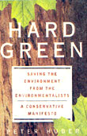

An Interview with Peter Huber.
Matt Scanlon for MOTHER:Could you describe what the term "hard green"means?
PH: Well, I am using the term in response to a phrasing that was invented by Amory Lovins in describing what he called the "soft energy path." He was specifically advocating a move away from what he described as the "hard fuels"...fossil fuels, generally, and toward what he described as the "soft fuels," namely solar and wind. He emphasized conservation a lot. It was quite an influential thesis [Foreign Affairs, 1976], and it's been quite widely embraced. Not by policy-makers or people who actually generate most of our energy, but by many lifestyle advocates, I suppose.
MOTHER: Do you refute what Amory Lovins said about the benefits of conservation?
PH: No, but I recognize that his philosophy is only one piece of the puzzle. He seems to have spent much less time on the macroenvironment and macroconservation...how you preserve forests, and watersheds, arid lakes and streams. It's much more concerned about the microassaults and very long-term effects and elaborate computer models.
MOTHER: Can you give an example of what you term "microscopic assaults?" Do you believe them to be imaginary?
PH: Oh, imaginary, no. We're talking about real things. They range from the trace level issues that are of much concern, such as dioxins, trace metals, PCBs, and so on, to the very long-term model surrounding such things as carbon monoxide in the atmosphere. On the microassaults, you can pick your pollutant of the week and it'll be in the headlines. Particulates, lead, mercury. By no means are these imaginary things. What is very much open to debate is at what levels, and in what circumstances, their impacts are real and important.
MOTHER: So by picking an enemy "pollutant of the week," we're distracting ourselves from the central issue?
PH: Yes. One of the most striking things about modern environmentalism is how little it has to say about what many of us would think of as the much more traditional environmentalism. The old conservation movement, crystallized at the federal level by Teddy Roosevelt, said "Look, we have magnificent prairies, forests, lakes and coastal areas, and we ought to be conserving them, because they're magnificent." We don't need elaborate computer models to say why we wantto conserve redwoods.
MOTHER: Throughout the book, you seem to demonize the school of environmental mathematics, suggesting that it engenders in us a feeling of helpless inevitability. What, in your opinion, is the central fallacy of, say, Thomas Malthus' assessment of the ...disastrous consequences of the human population explosion and how that affects the environment?
PH: Well, Malthus basically made the assumption that the core resource out there for humanity is acres, and that when we run out of acres we either starve or have a war. He was simply mistaken. The core human resource is not our acres but our intellects, as has become vividly clear in this century, where we've actually, in the industrialized world, begun shrinking the number of acres we use. But you asked a more general question about mathematical models, and I have two things to say about them. One is that some of them are surely correct, and the second is that it is so easy to distort these models, and they get distorted in such quantity, that we know as an empirical fact that most of them are wrong.
MOTHER: So the mathematical population models of Paul Ehrlich and Malthus eliminated the brain inside the heads of the people they were counting... and human innovation is left out of their equations.
PH: Well, Malthus and Ehrlich are a stretch apart, and I'm certainly not the first to make this observation. But take the original Malthusian equation, which was basically that our human fecundity would outstrip human capacity to raise food on land. Well, we know as an empirical fact the reverse happened. We got much more efficient at growing food. Ehrlich made essentially the same mistake. Then, the interesting question becomes "How did we double and then double again, and then double yet again, our agricultural output?" And some of the mechanisms, the most important ones, are the least obvious. I mean, our transportation system, probably more than anything else, accounts for the reforesting of the Adirondacks and the first doubling of agricultural productivity in this country. Add to that selective crop breeding, fertilizers and pesticides, and so on, and we have quintupled the per acre productivity...far outpacing the increases in population during the same period. And this just made nonsense of predictions that our fecundity would outstrip our ability to grow food.
MOTHER: Can you give me an example of another model that went astray?
PH: A great example of the meandering of environmental point-making is the history of natural gas. People with any kind of memory of policy will clearly recall the day when we outlawed the burning of natural gas to produce electricity, on the theory that we were going to run out of it so soon that it was just unconscionable to burn natural gas to generate electricity. Now we're trying to mandate it. There is only one industrialized nation on the planet in the last quarter-century that has actually reduced its net carbon output into the atmosphere from energy sources, and that is France - because they've gone heavily nuclear.
MOTHER: I probably don't have to ask which fuel you favor.
PH: [Laughs] There is very little doubt in my mind that, properly managed technologically, the smallest footprint on the biosphere clearly is nuclear. But the imprint on the biosphere is not the only criterion we have. If people feel terribly uncomfortable with it, that's a legitimate factor. But if you're doing a strictly environmental choice, the smallest footprint is nuclear. And, I might add, smallerthan windmills, solar and all the other supposedly "soft green" darlings.
MOTHER: Are you defining "impact" simply in terms of how much real-estate energy the source demands?
PH: Once you actually do honest numbers, you almost inevitably come up with nuclear. If you're just going to do something solar on your rooftop, go ahead. But unless you are extremely frugal in your living, you will not get even a fraction of the power you're actually using today from solar panels. Then the question becomes, "Look, am I serious about using these soft alternatives to generate my power?" In which you undoubted ly will expand the number of acres you use in solar, wind and geothermal energy production, or else you go to a much more concentrated, centralized source, like nuclear, like coal, like oil. In terms of direct footprint on the biosphere, they are very frugal.
MOTHER: You mentioned in thebook the concept of "privatizing pollution." Could you explain what you mean by that?
PH: Pollution is clearly a legitimate problem that requires intervention of some kind. The debate isn't about whether one should do something about pollution, it's about what are the best means. The modern traditional means, of course, have been direct government regulation, where the government says, "Look, so much may be emitted from a tailpipe, or from a power plant smokestack." The next step beyond that is to allow different sources to trade, so that one can trade off against another. And that leads to much more efficient pollution reduction. With pollutants you can get a grip on in terms of how much is being emitted, and where it's being emitted, you create de facto property rights in the pollutant, you allow it to be traded off against pollution reduction technology. And with rather little effort you can develop very efficient markets that drive pollutants to a steadily declining level as the technology of pollution abatement improves and technological substitutes emerge. The problem areas come where you're dealing with things that are so diffuse that you cannot even get a handle on where stuff is coming, and where stuff is going. Consider carbon dioxide, which may or may not be called a pollutant. Nature is emitting 100 billion tons or so of CO 2 into the atmosphere each year. Humanity is responsible for five or six billion tons a year. With such a difficult substance, it gets very hard to create market solutions, because we don't have a good handle on what the problem is.
MOTHER: By your theory, it might be possible for groups of businesses to police themselves. In the absence of governmental overview, what's in it for an individual manufacturer to get a handle on any pollutants they emit?
PH: Nothing. Of course, the traditional problem with pollution is that your cheapest alternative is to clump your trash in the river, right? That's what people have done since time immemorial. With pollution, as with real estate, you still need a process that secures property rights, that says, "Look, this is how much right to pollute you own. This is where you sold it, or retained it, or bought new rights." But those are exactly the same problems that arise with ordinary land. We take property rights in real estate as obvious, but only because we have four centuries of law that have made them obvious.
MOTHER: So you believe that if we apply the same principles to the amount of pol lutants you're permitted to emit that wedo to other real estate and zoning particulars, the system becomes coherent?
PH: Yes, yes of course. I don't know of a single serious commentator ...conservative, liberal, or of any stripe ...who says, "Well, you know, forget about pollution." And certainly it's not my position. All I argue is that there are two factors. One is that there are more cost-effective and efficient means, which will give you larger pollution reduction if you embrace them. Secondly, that chasing pollutants right down to the last molecule is a) impossible, and b) truly counterproductive.
MOTHER: It might be, fair to say that the book, in part, challenges the idea of self-sacrifice. You seem to want to turn on its bead the theory that choosing to use less of everything will somehow remedy environmental problems.
PH: Oh, no. I am quite clear in the end that the only thing I actually believe in implicitly is that people who self-consciously and openly and deliberately say, `Look, I've got enough ...I don't need another car, I don't need a larger lawn, I don't need more beef in my diet,"...those people are making what I consider to be the most fundamental environmental choice. It's an honest one, and it's the only one that I consider 100% legitimate. The fraud that I very much object to is to say, "Look, I can trick the environmental hooks here. I can do efficiency, I can put up solar panel shingles on my roof. Or cut down half an acre of trees on my four-acre lot and erect this giant windmill. And by being so clever about my lifestyle, I can continue to live abundantly in terms of food and energy and everything else. I will then be green, but without changing my lifestyle." That, I am quite sure, is a fraud.
MOTHER: You often mention in tributes to national parks and forests that they should be expanded and maintained. You claim on these matters that conservationists have an "unanswerable case for government intervention of some kind." Could you tell me what kind of intervention you might favor?
PH: I favor the one that extends as far back as Teddy Roosevelt a century ago, and it's very simple. If we attach value to great wide-open unspoiled spaces and the wildlife they harbor, at some point the scale of those things clearly is too large for individual owners, or even groups of individual owners, to encompass or manage. And then government's role is to define those spaces through democratic process. That is essentially what the conservation movement has done for a century.
MOTHER: It's no secret that, at least in the opinion of the environmentalists I've spoken to over the years, your theories are more than just controversial.
PH: Oh, sure. Given the level of vitriol which I've attracted ...yeah, of course I'm controversial. But I would say this: I think environmentalism ...there really are two schools of it. I think I fit really quite comfortably in one of those two schools, and I am really an utter pariah in the other. The school I feel very comfortable in is the one rooted in traditional conservation and with people who really are out there managing wide-open spaces, working to protect them. With those people I will have disagreements about details, but never about the big picture. The school that really disagrees with me, as profoundly as anybody can disagree with me, are people who are not really interested in wide-open spaces. They're interested in dictating energy policy, in chasing molecular pollutants, in doing very large, international or global models of long-term scenarios with sweeping policy implications. I don't disagree with the objectives they say they're protecting. I very strongly question whether the objectives they claim to be advancing are in fact being advanced by the policies they advocate. Even within groups ...half of which I admire ...I see the same schisms. I mean, the Sierra Club began, obviously, as a sort of conservation movement-centered body. But the best I can tell, half of the pronouncements that issue from it these days are sort of off-the-wall and not supported factually. And it gets worse from there. When I read Al Gore's book (Earth in the Balance, Plume/Penguin, 1993), the thing that really stunned me was that until he rewrote the introduction this year, you wouldn't find a mention of Teddy Roosevelt, or of the national forests and the conservation movement. How could one write an entire book on the environment without giving more than a single sentence to the fact that we've been reforesting this continent since 1920?
MOTHER: Why would you think he would omit Roosevelt, his Republicanism aside?
PH: Well, as far as I can tell, he's just not really interested in the aspects of the environment that really interest me ...and that I believe interest a lot of traditional, open-space conservationists.
MOTHER: Do you believe that the global environment is in jeopardy?
PH: I think the answer to that has got to divide between different countries, and different aspects of the environment. I think the global fishing problem is very serious. I'm a lot less certain about the global climate issues, but tune will tell on those. I do know that the policies of the industrialized nations are having a very different impact on the atmosphere than the policies of the Third World. To give a single half-sentence answer, or sentence answer to, "Is the planet in trouble?" I think misleads more than it informs. Some aspects of it clearly are, some clearly are not. Some probably less so than the alarmists say.
|
|
|
 |